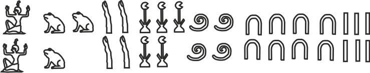

Time
Calendars helped communities anticipate seasons, planting, harvesting, and religious observances.
Passus 1. A river changes the land. A civilization learns to count, measure, record—and calculate with pictures.
01 · The need
Small communities can manage with small numbers. Agriculture changes the scale of the problem.
Along the Nile, farming produced harvests large enough to store and trade. Annual flooding renewed the soil, but it also made time, land, and quantities worth recording. Mathematics became part of organizing everyday life—not an isolated school subject.
Calendars helped communities anticipate seasons, planting, harvesting, and religious observances.
Builders and surveyors needed lengths, areas, volumes, and reliable right angles.
Trade, stored grain, wages, offerings, and taxes all required quantities that others could verify.
The important shift is not that earlier people were unable to count. It is that Egyptian society repeatedly confronted quantities too large—and too consequential—to leave as piles of marks.
02 · The notation
Egyptian numerals were additive. Each symbol had a fixed value, and a scribe repeated symbols until their values added to the required number.
All glyph drawings in this passus are by Tatiana Makarova.
\(123=1\cdot100+2\cdot10+3\cdot1\)

\[2{,}345{,}486=2\cdot10^6+3\cdot10^5+4\cdot10^4+5\cdot10^3+4\cdot10^2+8\cdot10+6\]
03 · The operation
To add, combine symbols of the same kind. Whenever ten identical symbols appear, exchange them for one symbol of the next value.
The pictures look different, but the action is identical:
\[6+5=11 \qquad\text{and}\qquad 6\cdot10+5\cdot10=11\cdot10=110.\]
04 · The algorithm
Instead of memorizing a large multiplication table, Egyptian scribes could build a product from repeated doubling and addition.


Each symbol is copied. Whenever ten symbols of one kind accumulate, they are exchanged for the next higher symbol.
Worked example
Place 1 beside 19, then double both columns. Stop when the next number in the left column would exceed 13.
| Power of two | Multiple of 19 | Use? |
|---|---|---|
| 1 | 19 | yes |
| 2 | 38 | no |
| 4 | 76 | yes |
| 8 | 152 | yes |
Choose rows whose left entries add to 13:
\[13=1+4+8.\]
\[19+76+152=247.\]
It is the distributive law in action:
\[13\cdot19=(1+4+8)\cdot19=1\cdot19+4\cdot19+8\cdot19=247.\]
05 · Sharing
Work it out with bread
Each worker therefore receives
\[\frac12+\frac14=\frac34.\]
The answer is not merely a number: it is also a practical cutting plan.
The Egyptian convention
Egyptian scribes normally represented a fraction as a sum of distinct unit fractions—fractions with numerator 1. The fraction \(2/3\) had a special notation, but a fraction such as \(3/4\) could be written as
\[\frac34=\frac12+\frac14.\]


The oval-like mark placed above a number indicated its reciprocal. Thus the symbol for 8 became the unit fraction \(1/8\).
The Egyptian method
Multiply basic unit fractions by the denominator, 18. Select distinct products whose sum is the numerator, 7.
| Unit fraction | Multiply by 18 | Decision |
|---|---|---|
| \(\frac12\) | \(9\) | Too large |
| \(\frac13\) | \(6\) | Need 1 more |
| \(\frac1{18}\) | \(1\) | Complete |
| Total | \(7\) |
Since \(6+1=7\), use the corresponding unit fractions:
\[\frac7{18}=\frac13+\frac1{18}.\]
Now try the same method
The procedure still works, but multiplying by 5 produces fractional values. Finding the next useful unit fraction is less obvious.
| Unit fraction | Multiply by 5 | Decision |
|---|---|---|
| \(\frac12\) | \(\frac52\) | Too large |
| \(\frac13\) | \(\frac53\) | Need \(\frac13\) more |
| \(\frac1{15}\) | \(\frac13\) | Complete |
| Total | \(2\) |
Because \(\frac53+\frac13=2\), the corresponding unit fractions give
\[\frac25=\frac13+\frac1{15}.\]
Equivalently, changing to fifteenths makes the same calculation easier to see:
\[\frac25=\frac6{15}=\frac5{15}+\frac1{15}.\]
A modern algorithm
The greedy algorithm repeatedly chooses the largest unit fraction that does not exceed the remaining amount.
The largest unit fraction no greater than \(2/5\) is \(1/3\).
\[\frac25-\frac13=\frac1{15}.\]
\[\frac25=\frac13+\frac1{15}.\]
06 · The surviving evidence
Most ancient calculations disappeared with the people who performed them. The Rhind Mathematical Papyrus survived.

The scroll is usually dated to about 1650 BCE. Its scribe, Ahmes, says that he copied it from an older source. The surviving text contains roughly eighty problems involving arithmetic, fractions, measurement, geometry, and the distribution of goods.
A working table
The opening table decomposes fractions of the form \(2/n\), for odd \(n\) from 3 through 101, into distinct unit fractions. For example, it records
\[\frac25=\frac13+\frac1{15}.\]

The table was a computational resource: when a division produced \(2/n\), a scribe could use the recorded decomposition rather than start again.
A problem we would call algebra
Ahmes asks for a number that becomes 19 when its seventh is added to it. In modern notation:
\[x+\frac{x}{7}=19.\]
Since \(x+\frac{x}{7}=\frac87x\),
\[x=19\cdot\frac78=\frac{133}{8}=16+\frac12+\frac18.\]
The final expression is written in the unit-fraction style we have just studied.
Geometry from a rule


A loop divided into 12 equal intervals can be pulled into a triangle with sides of 3, 4, and 5 intervals. The angle between the sides of lengths 3 and 4 is a right angle because
\[3^2+4^2=5^2.\]
This is a useful model of surveying with measured cords. The familiar “rope-stretcher” story should be presented cautiously, however: direct evidence that Egyptian builders routinely used this exact knotted-rope construction is limited.
The papyrus gives a rule equivalent to replacing a circle of diameter \(d\) by a square whose side is \(8d/9\):
\[A\approx\left(\frac89d\right)^2.\]
Compare this with the modern expression \(A=\pi(d/2)^2\). Equating the coefficients gives
\[\frac{\pi}{4}\approx\frac{64}{81},\qquad \pi\approx\frac{256}{81}\approx3.1605.\]
This is remarkably close to \(\pi\approx3.14159\), especially for a practical rule expressed without algebraic notation.
A mathematical puzzle
One entry lists a chain of powers of seven:
\[7,\;49,\;343,\;2401,\;16807.\]
The grain saved is \(16{,}807\) measures. Ahmes also adds every quantity in the chain:
\[7+49+343+2401+16807=19607.\]
The structure resembles the later “As I was going to St. Ives” nursery riddle: houses, people, sacks, cats, and kittens multiply by seven at each step. The resemblance does not establish a direct historical connection, but it makes a delightful mathematical rhyme across centuries.
What remains
Egyptian scribes left us more than unusual symbols. Their surviving mathematics shows several powerful ideas working together:
The notation is unfamiliar. The mathematical habits—represent, decompose, calculate, check—are very much our own.